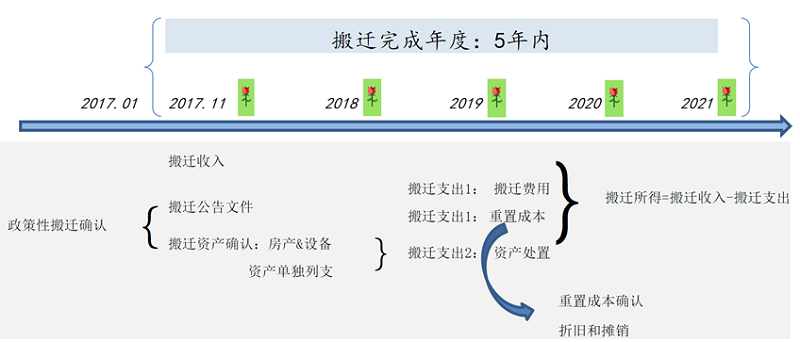

案例分享 > 案例详情
“政策性搬迁补偿，资产重置”财税解读
1、搬迁过程有关发票开具
2、政策性搬迁收入
3、政策性搬迁收入的增值税处理
4、政策性搬迁收入的土地增值税处理
5、政策性搬迁的印花税处理
6、政策性搬迁的契税处理
7、搬迁支出
8、固定资产计价和折旧
9、处置资产
10、搬迁重置资产确认
11、非重置成本
12、政策性搬迁所得的企业所得税处理
13、搬迁征收管理
14、搬迁测算：企业所得税

中华人民共和国企业政策性搬迁清算损益表
| 类别 | 行次 | 项目 | 金额 |
|---|---|---|---|
| 搬迁收入 | 1 | 对被征用资产价值的补偿 | |
| 2 | 因搬迁、安置而给予的补偿 | ||
| 3 | 对停产停业形成的损失而给予的补偿 | ||
| 4 | 资产搬迁过程中遭到毁损而取得的保险赔款 | ||
| 5 | 搬迁资产处置收入 | ||
| 6 | 其他搬迁收入 | ||
| 7 | 搬迁收入合计（1+2+3+4+5+6） | ||
| 搬迁支出 | 8 | 安置职工实际发生的费用 | |
| 9 | 停工期间支付给职工的工资及福利费 | ||
| 10 | 临时存放搬迁资产而发生的费用 | ||
| 11 | 各类资产搬迁安装费用 | ||
| 12 | 资产处置支出 | ||
| 13 | 其他搬迁支出 | ||
| 14 | 搬迁支出合计（8+9+10+11+12+13） | ||
| 搬迁所得（或损失） | 15 | 搬迁所得（或损失）（7-14） |